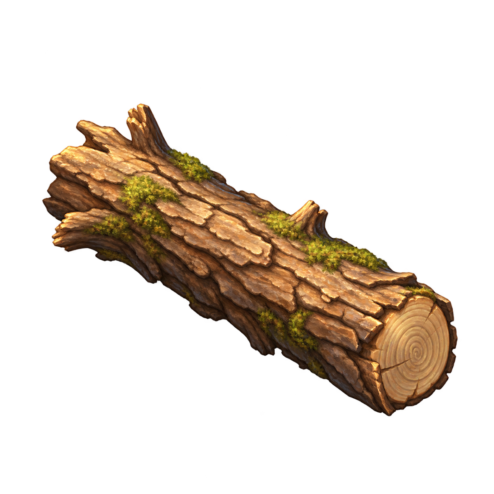
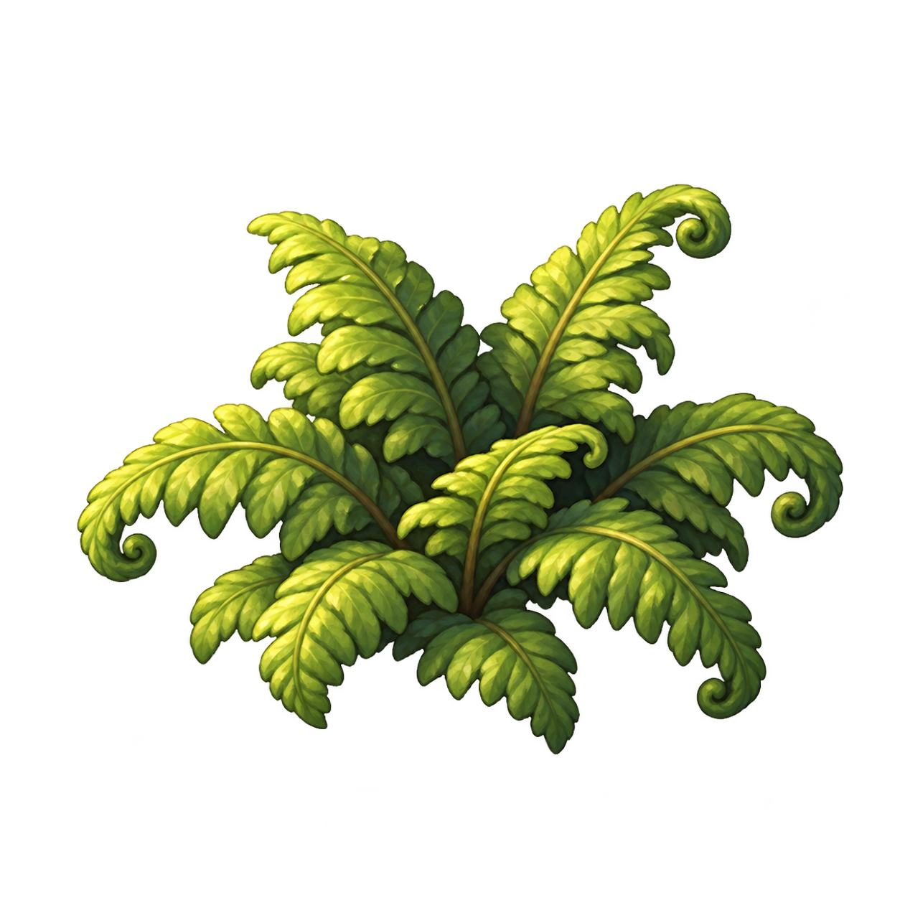
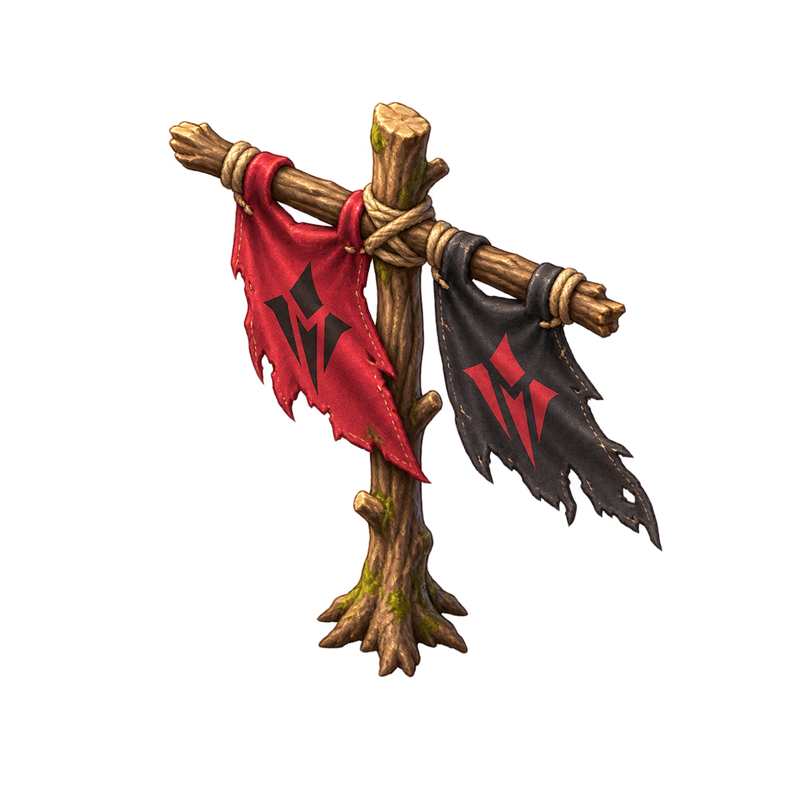
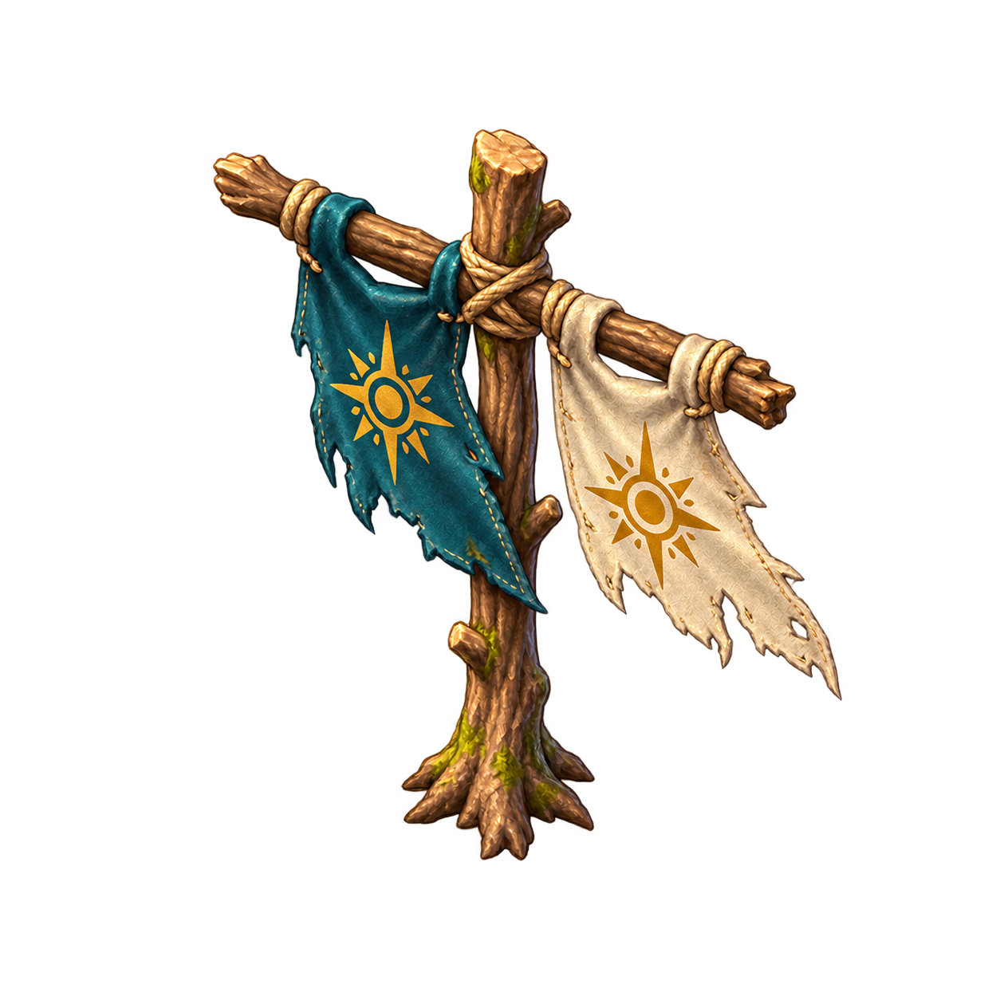
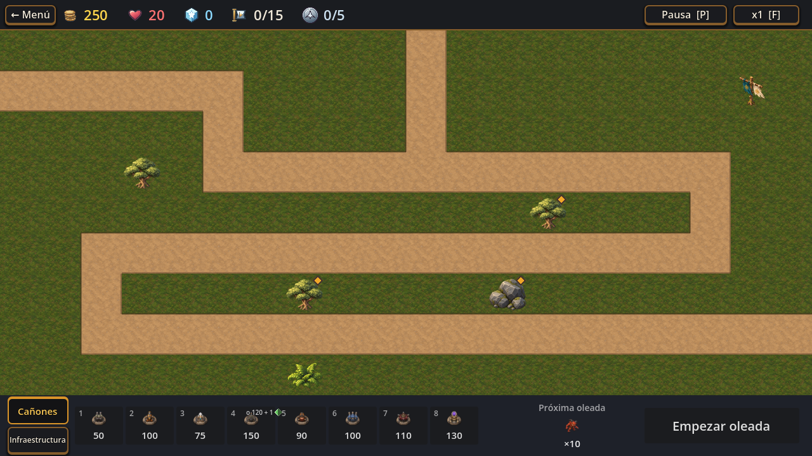

Tronco

34 px
Muestras dimensionales inspiradas en la decoración integrada de T277. Las cuatro piezas son propuestas para revisar, no aprobación de canon: los emblemas de enemigo y colonia todavía necesitan validación narrativa. Tamaño real de revisión: 34 px; muestra ampliada: 220 px.




Las capturas muestran el nivel 6 con el poste enemigo antes de ganar y con el estandarte del jugador después de una victoria. El guardado de captura es temporal y aislado.
